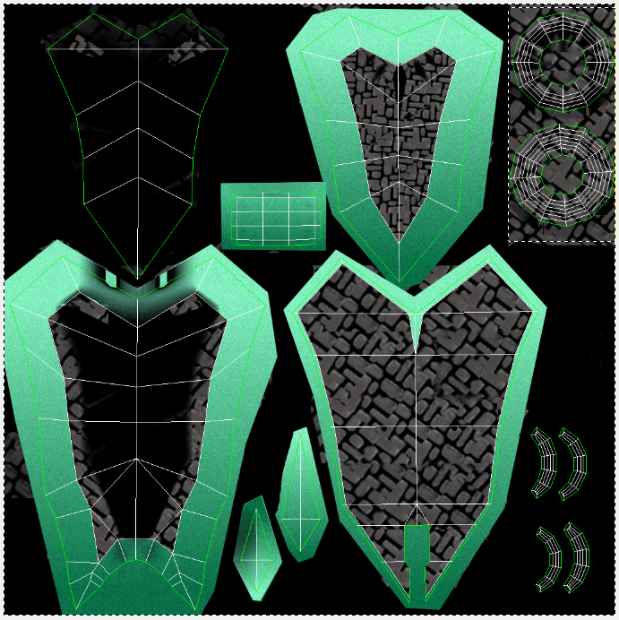
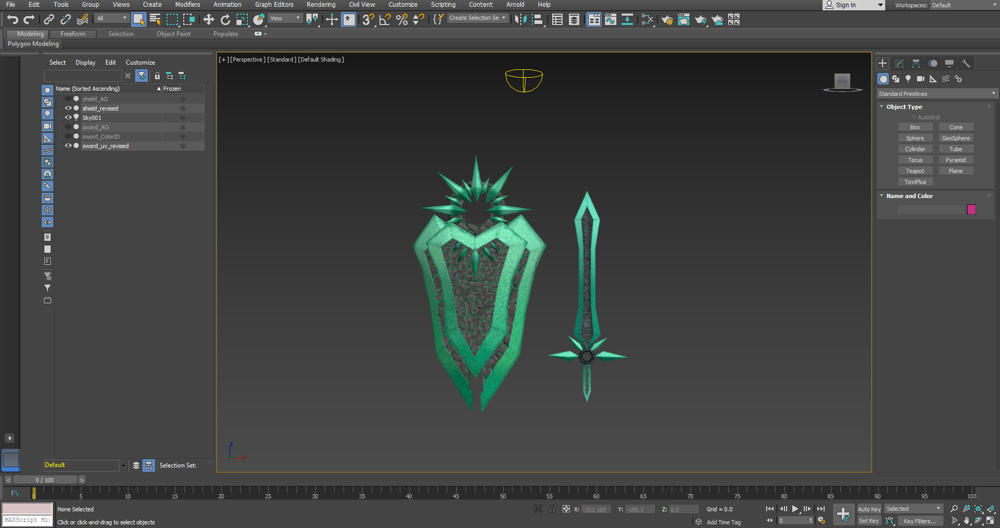
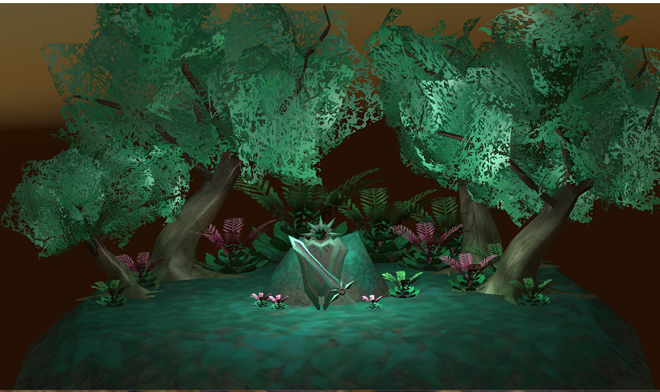

Took a 3D Modeling Computer Science Class. I was interested and decided to make a sword and shield from League of Legends.
Create a diorama of a scene using Leona's Sword and Shield from League of Legends.
6 Months
3Ds Max - For Modeling, GIMP - For Texturing, Unity Game Engine
Texture Layout- Decided to not copy the gold color texture and make my own rock/mossy texture

Models

Final Diorama Scene in Unity

If you would like the Unity Executable to be able to walk around in the environment please email me.
For more information on this project email me at jeremykn222@gmail.com